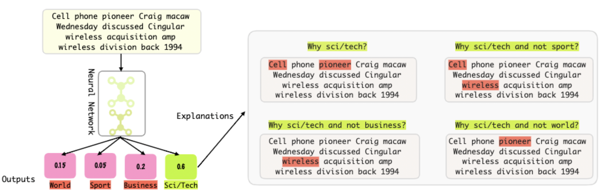

I am a PhD candidate at the Department of Computing Science, University of Alberta and Alberta Machine Intelligence Institute (Amii), working at the Explainable Artificial Intelligence (XAI) lab under the supervision of Prof. Randy Goebel .
I'm interested in deep learning Explainability, Interpretability, Fairness, Robustness , and the application of machine learning techniques to
health care applications. My current research focuses on developing self-explainable deep learning algorithms that are capable of explaining their predictions.
Housam Khalifa Bashier Babiker
Latest News
- Our paper is accepted in ECMLPKDD 2022.
- Our paper is accepted in EACL 2021.
- Our paper is accepted in COLING 2020.
Research & Service
Selected Publications
|  |
Neural Networks with Feature Attribution and
Contrastive Explanations
|
|
A Multi-Component Framework for the Analysis and Design of Explainable Artificial Intelligence
|
|
 |
DISK-CSV: Distilling Interpretable Semantic Knowledge with a Class Semantic Vector
|
|
RANCC: Rationalizing Neural Networks via Concept Clustering
|
|
 |
Facial expression recognition using SVM classification on mic-macro patterns
|
Services
- Maintaining AMII XAI lab website
- Local Arrangement Chair
2017 IEEE International Conference on Systems, Man, and CyberneticsSMC 2017) - Invited Reviewer
- ECML-PKDD 2020
- ICDM 2020
- EMNLP 2020
- Artificial Intelligence Journal
Selected Awards
- Highest performance on task 4 of the COLIEE competition 2018, Japan
- GSA Travel Award 2017, university of Alberta
- Full Doctoral Scholarship: Awarded by the Computing Science Department of the University of Alberta
- Multimedia University: Research scholar Award for Master of Science
Teaching
- CMPUT174: Introduction to the Foundations of Computations, Fall 2017, Department of Computing Science, University of Alberta
- CMPUT414: Introduction to Multimedia Technology, Winter 2016, Department of Computing Science, University of Alberta
- CMPUT101: Introduction to Computing, Fall 2016, Fall 2017, Department of Computing Science, University of Alberta